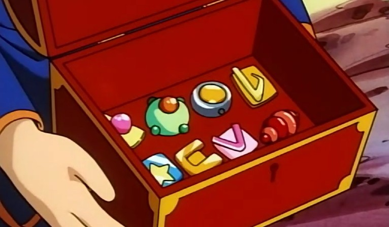
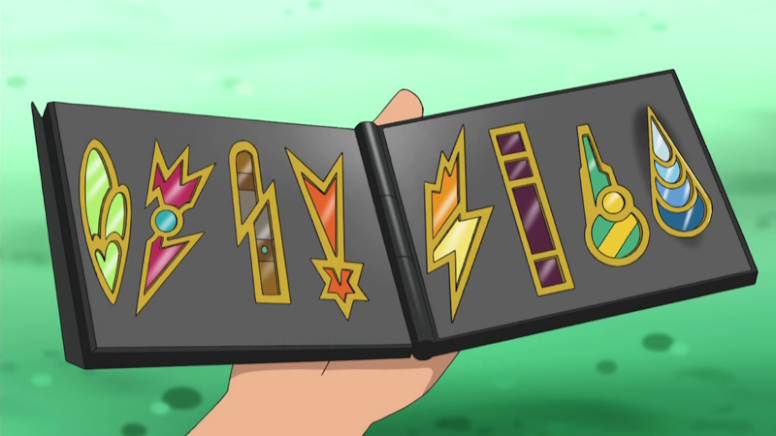

Quando alguém se torna um Treinador Pokémon, ele enfrenta diferentes tipos de experiências. Umas dessas experiências são as Batalhas de Ginásios, em que os Líderes de Ginásio testam as habilidades dos jovens treinadores para que eles possam entrar na Liga Pokémon.
Para que esses treinadores possam entrar na Liga Pokémon, eles precisam conseguir exatas 8 insígnias de Ginásios. Elas são obtidas quando o treinador vence os Líderes de Ginásio. Isso significa que, em uma dada região, existem diferentes tipos de Ginásios espalhados e, geralmente, os treinadores precisam convocar os líderes para uma batalha, vencer e ser premiado com a sua insígnia. Pode acontecer também de muitos treinadores não precisarem batalhar com os Líderes de Ginásio para conseguir insígnias, pois muitos líderes possuem regras diferentes em seus Ginásios e tendem a distribuir insígnias aos treinadores, como aconteceu em algumas ocasiões no anime.
Ash colecionou ao longo de sua jornada diversos tipos de insígnias de Ginásio. No início do anime, nas primeiras temporadas, Misty, uma das parceiras de jornada de Ash, sempre implicava pelo fato de Ash ter ganhado algumas das insígnias de Kanto sem ter precisado batalhar por elas.
No episódio 633 - Flint Brilha no Fogo! é mostrado que o Líder de Ginásio Volkner, em Sinnoh, distribuía insígnias aos treinadores porque não tinha mais vontade de batalhar. Outra questão no anime é de que você só pode enfrentar certo ginásio se tiver um número específico de insígnias, como foi mostrado no episódio 806 - Kalos, Onde Sonhos e Aventuras Começam!
Uma curiosidade interessante também é vista no episódio especial “A Insígnia Azul da Coragem”. Nele, presente em Pokémon Chronicles, é mostrado Misty, Tracey e Sakura trabalhando para fazer as insígnias da Cascata. É importante salientar que muitos Líderes de Ginásios devem, eles mesmos, criar as insígnias dos seus respectivos Ginásios. Pode acontecer também de muitos Líderes “pagarem” para as insígnias serem fabricadas - mas só pelo fato de os Líderes criarem suas insígnias já mostra o empenho deles para com o seu Ginásio.
Até o momento atual, Ash conquistou todas as insígnias de Kanto, Johto, Hoenn, Sinnoh, Unova e Kalos. Além disso, ele conquistou as 4 insígnias do Arquipélago Laranja, as quais são exclusivas do anime.
Ao longo do anime, também foi mostrado que muitos treinadores que Ash encontrou por sua jornada possuíam insígnias que não existem nos jogos principais, o que pode indicar que existem mais do que oito Ginásios presentes em uma região Pokémon. Segue alguns exemplos mostrados no anime:
O episódio 65 - A Batalha da Insígnia! mostra que Gary adquiriu mais do que 8 insígnias para entrar na Liga de Kanto. Ele conseguiu 10 insígnias, sendo elas três iguais as que são conhecidas nos jogos, o que leva a entender que deve existir pelo menos quinze ginásios diferentes em Kanto.
No episódio 75 - Um Osso Duro de Roer! aparece um treinador chamado Otoshi que possui 8 insígnias, porém ele só possui quatro em comum com Ash (imagem acima). Mais a frente, nesse mesmo episódio, é mostrado um treinador desconhecido com oito insígnias completamente diferentes das que Ash possui (imagem abaixo).
Em Hoenn, no episódio 402 - Salvo pelo Beldum!, um dos amigos de Ash, Morrison, aparece com uma 8ª insígnia diferente das que Ash carrega consigo, o que leva a crer que na região de Hoenn existam pelo menos 9 Ginásios.
No episódio 511 - Mismagius no País das Maravilhas!, o Pokémon Mismagius criou uma ilusão que mostra um sonho em que aparece Ash com várias insígnias que ele não possuía, o que leva a crer que ou foi apenas uma ilusão de Mismagius ou existem mais de 8 Ginásios em Sinnoh.
Barry aparece carregando 3 insígnias, 2 iguais de Ash e uma terceira diferente no episódio 569 - Barry Botando pra Quebrar! No episódio 631 - Fogo Contra Fogo!, Barry aparece com 8 insígnias, sendo mais duas delas diferentes das de Ash. Logo, deve existir pelo menos 11 Ginásios na região de Sinnoh. Essas mesmas 2 insígnias são carregadas por outro treinador chamado Nando, um dos rivais de Ash e Dawn, no episódio 642 - Última Chamada - Primeiro Round!
Em Unova, um dos rivais do Ash, Trip, carrega consigo 5 insígnias (imagem acima), sendo três delas desconhecidas, mostradas no episódio 713 - Ash Desafia o Campeão! Já no episódio 754 - Adeus, Copa Junior - Olá, Aventura!, um dos rivais de Ash na Liga, Cameron aparece carregando 3 insígnias diferentes das que são conhecidas na região (imagem abaixo). Duas dessas insígnias são iguais às do Trip, e uma delas é diferente. Uma curiosidade é que em Unova existem 10 Ginásios que estão presentes nos jogos e ao total, como mostradas nas insígnias dos rivais do Ash, é possível que nessa região existam pelo menos 14 Ginásios.
Em Kalos, no episódio 881 - Uma Batalha Elegante!, Sawyer aparece carregando 4 insígnias, sendo três diferentes das que são conhecidas e que o Ash possui.